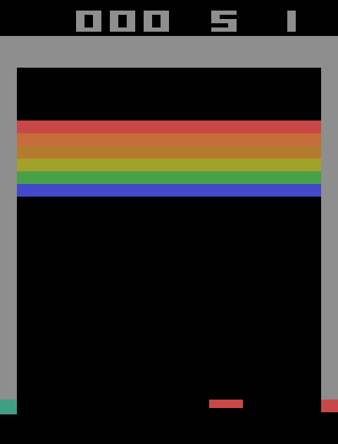
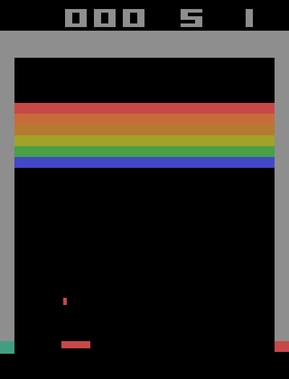
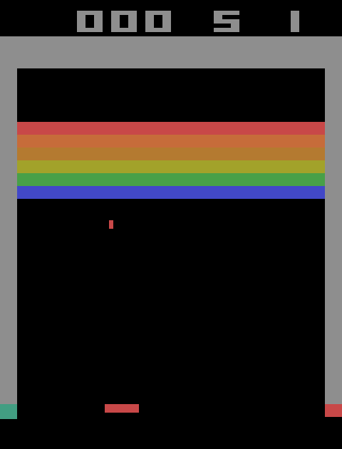

Assignment 4, Part 1: Prediction sheet
Eivind Systad Geiran and Trym Andreas Johnsen · IT3212 · Option 2: Breakout
These predictions were written before the assessed experiments. Prior work was limited to environment inspection without learning.
Finalised 12 November 2026, 21:45
0. Provisional setup
This provisional setup may change in Part 2; later changes are annotated.
| Item |
Provisional choice |
| Agents |
Tabular one-step Q-learning (ε-greedy) and clipped PPO (small MLP actor-critic) |
| State |
Both see the same compact RAM features. In play: ball y (8 bins), ball direction (dx, dy), bricks hit (0/1), a coarse paddle zone (left/centre/right), and signed horizontal error Δx = ball x − paddle centre. Δx uses 11 non-uniform bins with boundaries −24, −16, −12, −8, −4, 4, 8, 12, 16 and 24 px, giving fine resolution near the paddle edge and coarse tails. Before launch, the state uses the 8-bin paddle position. About 2,100 cells for nonzero directions; zero handling provisional. PPO gets the same bin indices scaled to [0, 1] |
| Episode |
One life from a fresh game, after 0–30 random paddle moves drawn from the episode seed |
| Outcomes |
Success: 2 bricks hit (terminal, reward +1). Failure: ball lost (reward 0). Timeout: 2,000 agent steps, reported separately |
| Settings |
A: sticky actions off (deterministic). B: sticky probability 0.25. C: B plus a step penalty c = 0.001. D: provisional brick layout with a 32 px gap; evaluate B agents without further training. Narrower paddle is separate (P7) |
| Budget |
Same for both agents, counted in agent steps (1 step = 4 frames). Provisionally 500k steps per run. Small budget = the first 10% |
| Defaults |
γ = 0.99 for both. Q-learning: zero-initialised table, α = 0.1, ε falls linearly from 1.0 to 0.05 over the first half. PPO: learning rate 3·10⁻⁴, entropy 0.01, 4 epochs, clip 0.2, GAE λ = 0.95. Both get the same tuning allowance |
| Evaluation |
Separate evaluation seeds. 200 episodes every 10% of the budget, with no updates. Primary policy: greedy Q (ties broken at random) and most-probable PPO action. Sampled PPO is reported separately |
| Seeds |
At least 5 training seeds per agent, the same list for both |
| Decision rule |
Each metric is computed per training seed. Supported: the mean difference is in the predicted direction and larger than the pooled between-seed SD. Contradicted: larger than the pooled SD in the opposite direction. Inconclusive: otherwise |
Inspection facts: random play reaches 2 bricks in 1% (A) and 4.5% (B) of lives; median full-life lengths are 27/28 steps. Tracking reaches 2 bricks in 100% (A, 20 lives) and 89% (B, 100 lives). These runs had no random start moves. In A, the tested seeds gave identical trajectories for the same actions.
D's provisional "unseen map" candidate has a 32 px gap in the brick wall. Inspection confirms changed pixels and collisions; compatibility with fresh-life starts still needs validation. A narrower paddle or another game mode alone does not establish a new map.
For multi-part predictions, classify each part separately; report mixed results when they disagree. The SD rule is descriptive, not a significance test; equality is inconclusive unless an explicit threshold below says otherwise. No occurrences of a state/outcome means untested, not supported.
1. Predictions
P1. Which agent improves fastest with a small interaction budget?
- Prediction: PPO. At 10% of the budget, PPO's evaluation success rate is higher than Q-learning's in both A and B.
- Why: Success mainly requires keeping the horizontal error between the ball and paddle small. The relative-error representation exposes that geometry to both agents, but the Q-table still learns each combination of error, height, direction and paddle zone separately and propagates the terminal reward only one visited transition at a time. PPO can share what it learns between neighbouring error and height bins, while GAE distributes the delayed success signal across earlier steps in a rollout. Q-learning learns off-policy from exploratory transitions, but we expect PPO's sharing to matter more here.
- Test: In A and B separately, evaluation success rate at 10% of the budget. An additional 5% checkpoint and the untrained baseline describe early progress; the endpoint decides P1.
- Contradicted if: Q-learning's success rate at 10% is higher by more than the pooled seed SD in A or B.
P2. Which agent shows the largest performance variation across seeds?
- Prediction: PPO. At the full budget, its between-seed SD of evaluation success rate is at least 1.5 times Q-learning's in both A and B.
- Why: Initialisation, sampled actions and rollout composition can amplify early lucky successes through PPO's shared network. Q-learning also needs to discover sparse rewards and can learn brittle values, but updates stay local. With compact states, persistent ε-exploration and 500k interactions, we expect repeated visits to average out more variation in the table.
- Test: Final success-rate SD across training seeds, separately in A and B. Supported if SD_PPO ≥ 1.5 × SD_Q, contradicted if SD_Q ≥ 1.5 × SD_PPO; otherwise inconclusive. Both SDs zero is inconclusive. Report every seed and the range: five-seed SD estimates are noisy.
P3. How will stochastic transitions change the routes agents learn?
In Breakout, a route is how the paddle moves relative to the ball.
- Prediction: For both algorithms, B-trained agents (a) succeed less often in B than A-trained agents in A; (b) have smaller horizontal error during lower-field descent; (c) request fewer movement-category changes and show fewer paddle-direction changes.
- Why: Sticky actions repeat the previous executed action with probability 0.25 per frame, so late corrections can be delayed. We expect earlier centring and fewer requested switches. In A precise timing is more reliable, though early centring can still help. Sticky actions can also smooth movement without any learned strategy change.
- Test: Per seed: success; mean |ball x − paddle centre| during descent at y ≥ 150; requested-category switch rate in play (LEFT/RIGHT/STATIONARY, grouping NOOP/FIRE); observed switch rate from sign of paddle displacement, including zero. Displacement is not an executed-action log. For (b–c), cross-evaluate the frozen A/B policies at both common p = 0 and p = 0.25, with matched evaluation seeds and starts, no updates. Compare training origins within each p; log state occupancy and compare requested categories on shared observations to check for a policy change.
- Contradicted if: the reverse difference exceeds the pooled seed SD for any component, classified separately. Support for (b–c) requires the predicted direction under both common p values; effects seen only across different p values do not establish changed strategy.
P4. How does a step penalty change success rate and episode length?
- Prediction: With c = 0.001 per step (C vs B): (a) failed episodes are shorter in C, for both agents; (b) PPO's success rate is lower in C; (c) Q-learning's success rate changes little (inconclusive under our rule); (d) the median successful episode is at least 5% shorter in C.
- Why: Before success, C rewards are negative; quick failure ends the penalties, while discounting weakens the delayed +1. With γ = 0.99 and c = 0.001 on every step, including termination, success at 300 steps returns −0.0456; loss at 27 returns −0.0238 (discounted). These lengths are hypothetical. PPO may settle into short failures; untried zero-valued Q-actions may partly oppose this. Inspection records full lives, not time to K = 2. Shorter successes and the different success-rate effects remain hypotheses; conditioning on success can change which trajectories remain.
- Test: Success and failure rates (not returns, which use different rewards), and median lengths of failed and of successful episodes. B vs C, per agent.
- Contradicted if: (a) failures are longer or (b) PPO success is higher, beyond the pooled seed SD; (c) Q success changes beyond that SD in either direction; (d) the successful-length ratio C/B is > 0.95. Support (d) at ≤ 0.95; classify every part per agent. No successes/failures leaves the corresponding length test untested.
P5. Will the agent with the highest training return also perform best in evaluation?
- Prediction: Not reliably. In at least one of A, B and C, the order by training return and the order by evaluation success differ. Q-learning's evaluation success exceeds its training success by more than PPO's does.
- Why: Q-learning trains with ε-greedy actions, and the random actions lose balls, so its training return understates its greedy policy. The cliff-walking example in Sutton & Barto shows the same effect: the online return of Q-learning is lower than its greedy policy deserves. PPO's training return comes from its own sampled policy, so evaluating its most probable action changes less. It can even hurt, if the sampling was doing useful work.
- Test: Per seed, use episodes completed during the final 10% of training interactions for training return and success; compare with final evaluation. Rank agents by mean training return and evaluation success within each setting, treating differences within the pooled SD as ties. Compare evaluation-minus-training success gaps separately in A, B and C.
- Contradicted if: (a) all three settings have matching untied rankings; or (b) PPO's gap is larger beyond the pooled SD in a setting. Ties leave the corresponding claim inconclusive; report the two claims separately.
P6. Which agent would we initially recommend, and what would change our mind?
- Prediction: For repeated operation under uncertainty we initially recommend PPO because we expect it to learn faster (P1) and lose less performance after the paddle change (P7), but P2 makes this recommendation provisional: we expect greater variation between PPO seeds. For a quick classroom demonstration we expect tabular Q-learning to be better because its table can be inspected directly and each run is cheap.
- We would change our mind if:
- Q-learning's failure rate in B is lower than PPO's by more than the pooled seed SD at the full budget.
- PPO's worst seed is worse than Q-learning's worst seed in B. Reliability matters more than the mean.
- At equal wall-clock time, Q-learning is ahead because PPO's cost per step is much higher.
- P7 is contradicted.
P7 (extra). What survives the change to a narrower paddle?
- Prediction: Both B agents succeed less often with the 12 px paddle, but PPO loses fewer percentage points than Q-learning.
- Why: Relative error keeps its meaning, but safe catch offsets narrow. Neither agent sees paddle width. Q-learning may accept edge states that worked in training, while PPO's sampled training may favour centring. Tracking drops from 89% to 72% (100 lives each, no random starts).
- Test: Per seed, success in B minus success with difficulty 1, using the same frozen B agents, seeds and starts. This does not establish transfer to an unseen map.
- Contradicted if: either agent improves, or Q-learning loses fewer percentage points than PPO, beyond the pooled seed SD. Classify the individual drops and their difference separately.
2. States where we expect the approaches to differ



Examples of S1, S2 and S3 (left to right), captured during inspection with the tracking rule.
Test S1–S3 on final B agents, with S3 also checked at saved checkpoints. Log raw RAM, binned observation, requested action, Q-values/probabilities and transition. Compare policies on shared observations as well as their own trajectories; distinguish cell changes from within-cell policy changes. Part 4 uses these logs.
S1. Ball not launched
Definition: ball not in play (RAM bytes 99 and 101 are 0), any paddle position. Only FIRE makes progress.
- Q-learning: FIRE in the paddle positions that are common at launch (central bins). In rarely visited edge bins the values are still tied near zero, so the launch is delayed.
- PPO: FIRE is the most probable action in every paddle position, with P(FIRE) > 0.9.
- Why: Every episode starts here, but the random start moves mostly leave the paddle near the centre. The table learns each cell separately, while the network can generalise "ball not in play → FIRE" across paddle positions.
- Test / contradicted if: Probe all 8 launch bins per seed; log visits and launch delays. Q's account is contradicted if rare edge bins have no greater delay than common central bins, or FIRE is not favoured in common bins. PPO's threshold is contradicted by P(FIRE) ≤ 0.9 in any bin. Report ties and unvisited bins.
S2. Ball falling at the paddle edge
Definition: ball falling (dy > 0), ball y ≥ 165, and ball x over the paddle's outer 4 px (4–8 px from the paddle centre).
- Q-learning: favours STATIONARY (NOOP/FIRE) in most S2 cases: an edge catch can work with the 16 px paddle.
- PPO: favours moving towards the ball in most S2 cases, centring the paddle.
- Why: Q-learning's target assumes greedy future requested actions, so it may value an edge catch that succeeds when later actions are controlled. PPO updates under its sampled policy, so its own future action variability can make a centring margin valuable. This resembles the off-policy/on-policy contrast in cliff walking (Sutton & Barto, Example 6.6), but sticky transitions affect both algorithms and are not ignored by Q-learning. The previous executed sticky action is not observed, so the state remains partially observable; the predicted difference is a hypothesis, not a necessary consequence of the algorithms.
- Test / contradicted if: On shared S2 observations, per seed, Q's favoured category is STATIONARY in ≤ half the cases, or PPO's is towards the ball in ≤ half. Use primary-policy actions, mapping NOOP/FIRE to STATIONARY; report Q ties separately. Track contact error separately: wider Q offsets support the margin explanation, not the action prediction alone.
S3. Ball rising in mid-field
Definition: ball rising (dy < 0), 100 ≤ ball y ≤ 150, 50 ≤ ball x ≤ 110. The next paddle contact is many steps away, so the action matters little for now.
- Q-learning: no stable preference. The greedy action changes between checkpoints and seeds, and often between consecutive steps.
- PPO: a stable choice, typically moving the paddle towards the ball's x position. Consecutive actions rarely switch.
- Why: The four Q-values are almost equal here, so small estimation errors decide the argmax, and a table has nothing to smooth them with. PPO's network shares parameters with nearby states where the action does matter, so its preference here follows those.
- Test / contradicted if: Q's switch rate within S3 or checkpoint change rate on shared cells is lower beyond the pooled SD; Q has a larger share of cells with seed agreement; or PPO favours moving towards the ball in ≤ half the shared cases. Agreement = ≥80% of seeds choose the same movement category. Classify each part; count exact ties separately.
3. Preservation and AI assistance
We preserve the submitted sheet. Later interpretations are dated and keyed to prediction IDs, explaining what changed and why; results are compared with the original.
Claude (Anthropic) and Codex (OpenAI) were used as assistants while we worked on the prediction sheet. They helped with the draft and served as sounding boards as we discussed our assumptions and how to test them. We led the work and own the final predictions, reasoning, and experimental choices.
References
- Machado, M. C. et al. (2018). Revisiting the Arcade Learning Environment. JAIR 61. (Sticky actions, p = 0.25.)
- Schulman, J. et al. (2017). Proximal Policy Optimization Algorithms. arXiv:1707.06347.
- Sutton, R. S. and Barto, A. G. (2018). Reinforcement Learning: An Introduction, 2nd ed. (Q-learning; Example 6.6, cliff walking.)